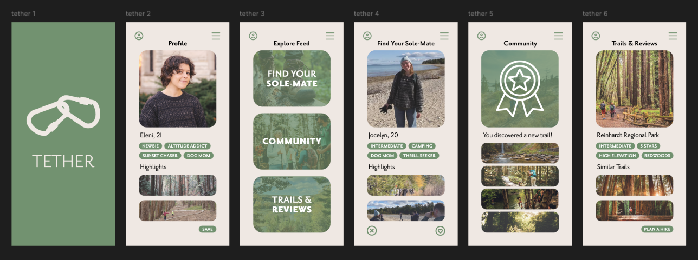
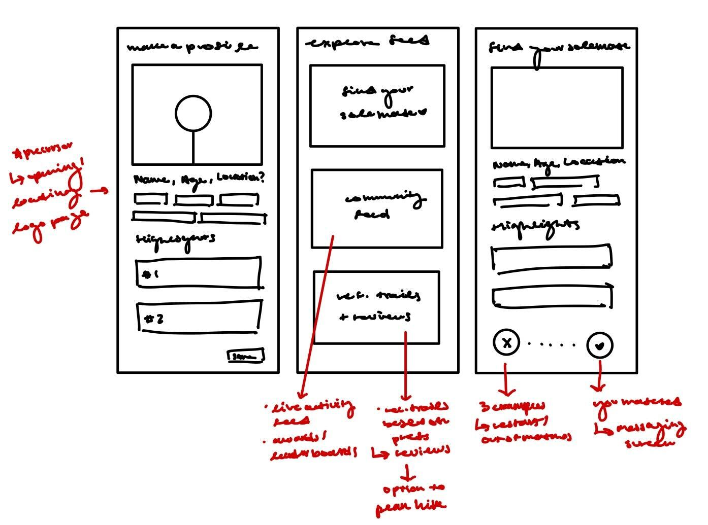
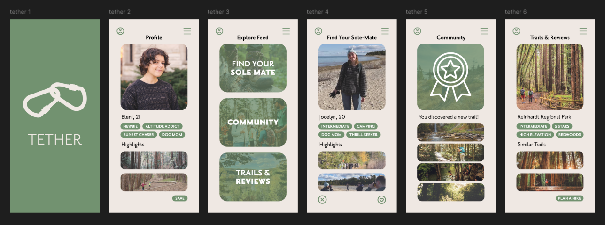
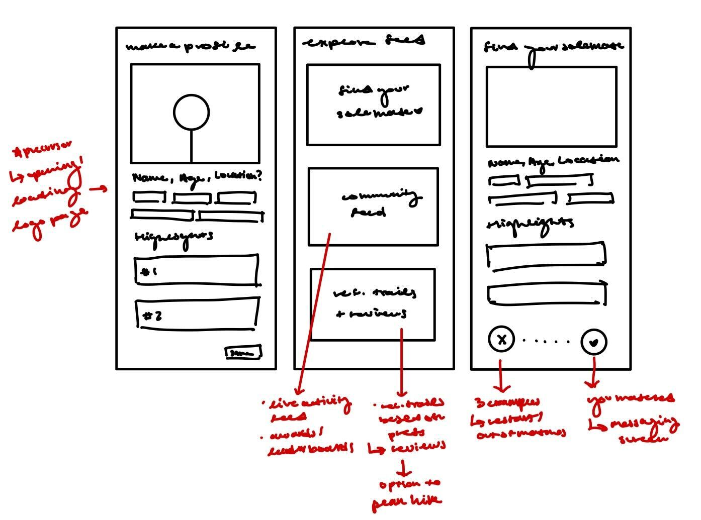

Tether
A conceptual app and physical device helping hikers connect, plan, and explore in community.
Time Frame
Winter 2025
Course
UX Design Studio
Team
Beatriz, Eleni, Jason, Libby
Role
Research · Strategy · Visuals · Prototyping
Tools
Overview
Tether is a conceptual mobile app + physical product designed to help hikers find community while exploring trails. Created as part of UX Design Studio (DSGN 306) during the Bay Area Immersion in San Francisco, this end-to-end design sprint was grounded in field research, prototyping, and iterative storytelling.
From Field to Figma


 





We prototyped on paper and Figma, socialized with other hikers, tested ideas in the field, and created a mobile experience for connection + navigation that goes beyond the screen.
Final Design Highlights


Final Presentation
This deck walks through our research, concepts, and product development journey.
Interactive Prototype
Try out the prototype we presented during our Bay Area final showcase!
Reflections
This project reminded me that good design starts on the trail—not in the studio. Our best insights came from asking questions, listening deeply, and walking the paths our users walk. I loved blending digital and physical storytelling to create a product that encourages connection, curiosity, and confidence.